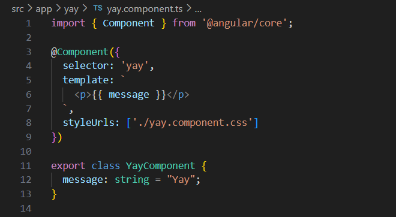

Angular is a component-based webapp development platform that uses TypeScript code. It provides a clean app development structure that includes beneficial features to test applications and reduce code repitition.
After installing Angular with Node, you can create an Angular project with the following command to your terminal:
ng new [project-name]
Components
Components are the building blocks in Angular. They're essentially files that code for custom-made HTML elements to add into the HTML code of your webapp. You can make a component either manually by creating a TypeScript file named "[course-name].component.ts" or inputting the following command into the terminal:
ng g c [course-name]
Every component file includes an import of "Component" from @angular/cli, a main exportable TypeScript class that codes for the functionality of the component, and a @Component decorator that specifies the selector name, HTML code template, and optional CSS of the component.
Here's an example of a base component file:
- {{}}, or double curly brackets, allow for string interpolation in Components